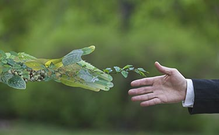

Bienvenue sur le site the Dark Side Of Pied Piper !
Venez découvrir le coté sombre de l'entreprise de la série Silicon Valley
Venez découvrir le coté sombre de l'entreprise de la série Silicon Valley
Silicon Valley la série comique d’HBO, sur les programmeurs du berceau des nouvelles technologies . Créé en 2014 par Mike Judge cette série comporte 6 saisons …

La Pollution numérique représente 2 % des gazs à effets de serres, il est donc important de comprendre son fonctionnement afin de la diminuer .

Le numérique faisant de plus en plus partie de nos vies, il est important pour la planète, de savoir comment l’utiliser de manière plus écologique
